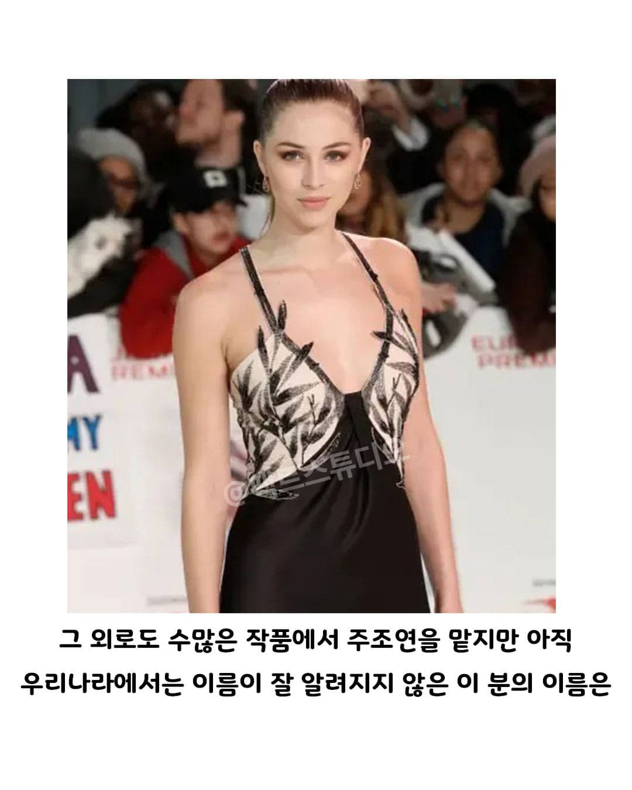
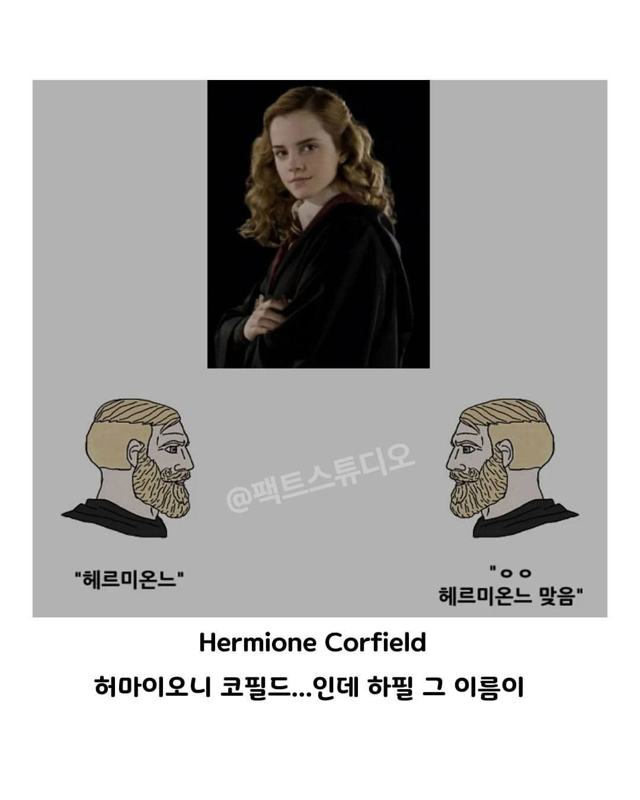
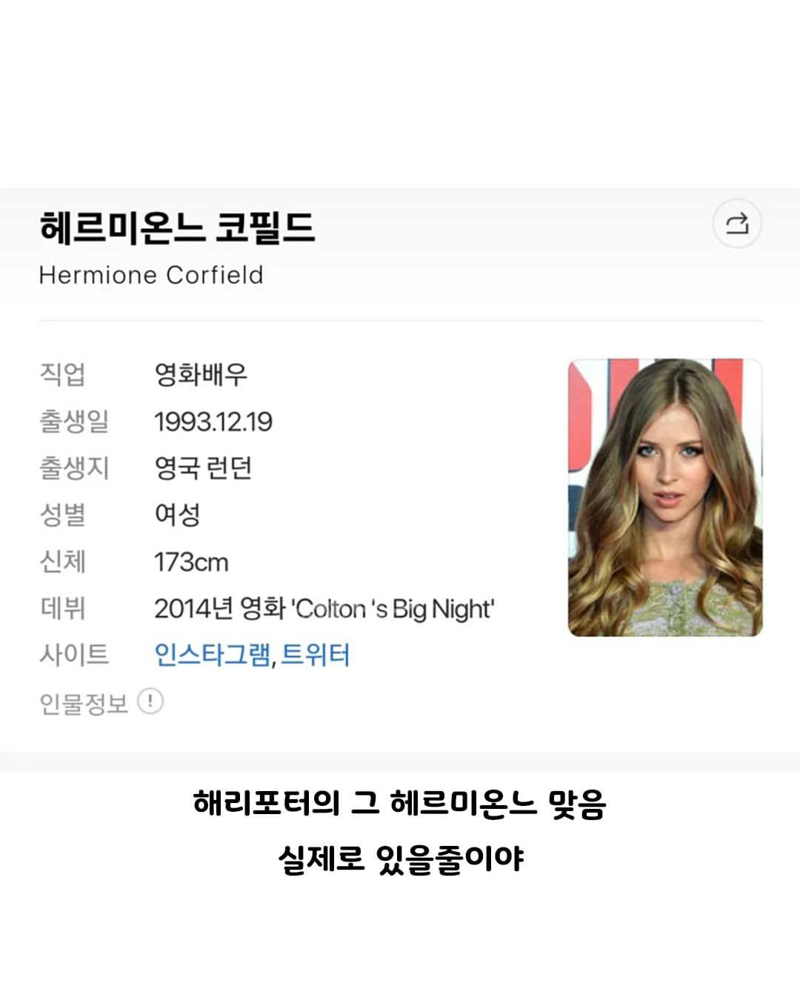

"헤르미온느"
her = 헐
mi = 마이
one = 원
hermione = 헐마이원
헐미원
her = 허
mi = 마이
one = 오니
hermione = 헤르미온느
(대충 피넛버타 애기 영상)
E = 이
yes = 예스
eyes = 이예스
할미 원
원할머니...
헤르미온느 되려면 n이 2개 있어야하는거아님..?
~ne 가 아니라 ~nne
그리스도 헤르미오네라고 하네 족보없는 발음은 맞는듯
원래 잘 안쓰이는 이름 아니었나 ㅋㅋㅋㅋㅋㅋㅋㅋ
헤모글로빈 누님으로 하죠
해리포터 번역가도 그 전에 번역했던 작품의 동명이 '헤르미오네' 여서 그랬다던데
헤르미언
하필 영화 해리포터 헤르미온느가 이름이랑 이미지랑 찰떡이라
허마이오니가 맞는데 이거 너무 짜침
왜 bozi나 jaji가 아니지
먼소리노???
"파인애플"
"허마이오니"